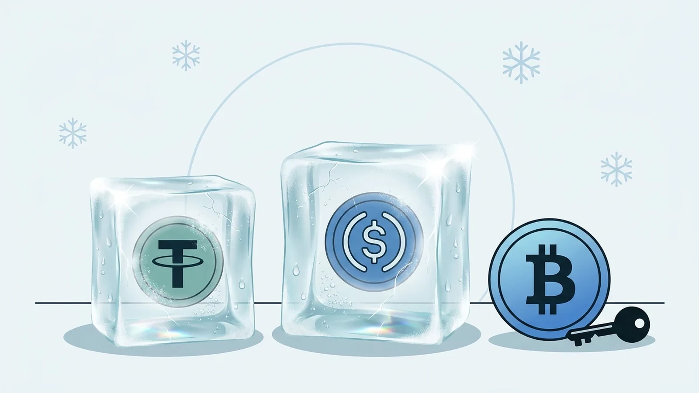

On 29 October 2026, at around four in the afternoon New York time, the largest theft in the history of money began. It lasted about twenty minutes. When it was over, roughly $6.3 billion in digital assets had left the hot wallets of Binance, the world's largest cryptocurrency exchange, across ten different blockchains. Investigators at TRM Labs attribute the attack to TraderTraitor, a group tied to North Korea's Lazarus — the same actors behind the Bybit hack of 2025, which held the previous record at a quarter of this size.
Binance, to its credit, responded the way a serious company responds. It halted trading, suspended withdrawals, promised to cover every loss from its own reserves, and within days said it had replenished most of what was taken. If that holds, no customer will lose a single satoshi.
This article is not an attack on Binance. It is about what those twenty minutes revealed: three things that were always true, and that six billion dollars made impossible to ignore.
One building held six billion dollars
An account on an exchange is not a wallet. It is an entry in a company's database: the coins sit in the company's wallets, under the company's keys, and what you own is a promise. Most days the difference is invisible. On 29 October it became the whole story — because when the keys that matter are someone else's, so is the decision of what happens next.
That evening, millions of people who had done nothing wrong discovered that their balance had an off switch, and that the switch was in someone else's hands. Withdrawals were suspended for days. The happy ending — Binance absorbing the loss — depended entirely on one company being both solvent and honest. This time it was. "Not your keys, not your coins" stopped being a slogan that evening and became a line item: $6.3 billion, gone in the time it takes to drink a coffee.
Three billion dollars frozen with a click
While the stolen funds were still moving, something remarkable happened. Tether and Circle — the companies behind the stablecoins USDT and USDC — froze roughly $3 billion of the loot. Tether blocked the attacker's haul less than two hours after the theft. It was the right thing to do, and it will likely save Binance billions.
But stop and look at what that click means. A stablecoin is an entry in an issuer's ledger. The issuer can mark any address unspendable — remotely, instantly, without your key and without asking you. This week that power was pointed at thieves. The mechanism, however, does not know the difference between a thief and you: it simply executes a decision taken in an office. Issuers freeze addresses routinely, at the request of governments and courts around the world.
A banknote can be stolen, but it cannot be switched off from a desk on another continent. A freezable token can. In that precise sense, a token with a freeze function is weaker than cash: it looks like money right up to the moment someone decides it isn't.
The coins nobody could freeze
About $1.5 billion of the stolen funds were in bitcoin. That part was not frozen — not because nobody tried, but because there is nobody to call. Bitcoin has no issuer, no administrator, no freeze function. The only weapons against the thieves are the public ledger, which records every move forever, and the exchanges that will refuse the coins when they surface.
Let's be honest: in this story, that property helped the attackers. It would be dishonest marketing to pretend otherwise.
But the property does not choose sides, and that is exactly the point. The same rule that shields a thief this week shields a saver every week: the person fleeing a collapsing currency, the dissident whose accounts were closed, or simply you, holding savings that no office can switch off. An asset either has a kill switch or it does not. If it has one, history says it will eventually be used — and not only on thieves.
Bitcoin held with your own keys is the one asset whose ownership is enforced by mathematics, verified by tens of thousands of independent nodes, and beyond the reach of any single company or government. That is why the BAL protocol is built on Bitcoin and nothing else — the reasoning we laid out in why we trust only bedrock.
The excuse the hack should bury
If the lesson is "hold your own keys", why do so many people still keep their savings on exchanges? Convenience, yes. But there is a quieter reason, and we hear it constantly: inheritance. "If something happens to me, at least there's a company my family can write to." A custodian's support desk feels like an inheritance plan. Your own keys feel like a dead end that dies with you.
Bitcoin After Life exists to remove exactly that excuse. With BAL, your keys never leave your wallet. You sign a time-locked Bitcoin transaction today that delivers your coins to your heirs on a date you choose, and as long as you are alive your wallet quietly keeps pushing that date forward. Independent Will-Executor servers hold the signed transaction and broadcast it when — and only when — the time comes. They cannot spend it, cannot change it, and cannot see who you are.
Notice what is missing: the honeypot. There is no building where six billion dollars sits behind one company's keys. A Will-Executor holds nothing a thief can use — only transactions that can go to one place, on one date, written by you. The coins stay where they belong, under your keys, until the day they move to the people you love.
Six billion dollars sat in one place, and twenty minutes was enough. Your savings — and your family's future — should not depend on any building, any database, or any company's promise. Only on keys you hold, and rules that mathematics enforces.
Figures about the hack come from public reporting by CNBC, NPR and TRM Labs, and may be revised as the investigation continues. Bitcoin After Life is open source and Bitcoin-only. Explore the plugin and the server on Gitea and read the full manual at bitcoin-after.life/docs.